QWEN 9B BASE · LORA · PIXEL TASKS
让 9B Qwen 用代码编辑像素
用官方 Qwen3.5-9B-Base 做 rank-8 LoRA SFT，把图像编辑、指称定位和图像问答统一成“看图 → 输出可执行程序 / bbox / 短答案”。没有图像生成头，没有扩散模型；像素只通过真实执行 PIL/NumPy 代码产生。
19,776 训练记录
5,000 optimizer steps
97 min 1×H20 训练时间
92.2% 真实照片区域着色
93.8% 真实照片指称定位
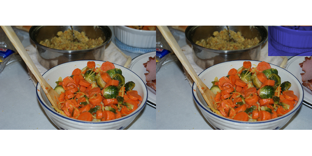
最终 adapter 的实际推理：左为输入，右为模型生成代码执行后的结果。指令是“把右上角白色锅的矩形区域染蓝并保持亮度”，模型没有拿到 target、bbox 或 mask。 最终结果
edit 成功要求：目标区域误差低、区域外保持、且相对“不改图”有提升；指称区域着色还要求 edited-region IoU ≥ 0.5。ground 用 IoU ≥ 0.5，QA 用精确答案。所有失败和无效结果都保留在分母与完整案例里。这些是转换后的小规模 smoke 结果，不是官方 leaderboard 分数。
任务协议：让模型输出可执行程序
没有给 Qwen 加图像生成头，也没有训练扩散模型或 VAE。模型是一个普通的视觉语言模型，输入 RGB 图像 + 指令，输出三类结构化结果之一：
EDIT 可执行 Python
读取 input.png，用 PIL / NumPy 改像素，保存 output.png。评测器真的执行这段代码，再和 target 比较。
import numpy as np
from PIL import Image
a = np.array(Image.open("input.png").convert("RGB"))
x1, y1, x2, y2 = 187, 42, 256, 89
patch = np.array(Image.fromarray(
a[y1:y2, x1:x2]).convert("HSV"))
patch[..., 0] = 0
patch[..., 1] = 160
a[y1:y2, x1:x2] = np.array(
Image.fromarray(patch).convert("RGB"))
Image.fromarray(a).save("output.png") GROUND JSON bbox
只输出坐标，不输出图像。评测用 IoU ≥ 0.5 判定成功。
{"bbox": [187, 42, 256, 89]} QA 短答案
输出 JSON 短答案，用于计数、颜色、位置等图像理解检查。
{"answer": 4}
{"answer": "green"}
关键点：图像像素永远不进入语言 token。模型学的是“看图 → 写程序 / 写坐标 / 写答案”，而不是“看图 → 回归像素”。
真实照片 · 指称区域着色 64 cases · 92.2%
输入是一张真实 COCO 照片和一句指称描述。模型必须输出可执行 Python：先定位被指称物体的矩形区域，再在该区域内做 HSV 着色，区域外像素保持不变。没有 mask、bbox 或 target 进入模型输入。成功需要同时满足区域 IoU ≥ 0.5 与低像素误差，因此会出现 prediction 与 target 几乎一致、但预测框偏小导致 IoU 不达标而判 FAIL 的情况（见下方 0.424 的例子）。
全部 只看成功 只看失败
PASS roi_refcoco_val_308201_red IoU 0.977 · edit L1 0.0030 · preserve L1 0.0008
EDIT: Tint the rectangular bounding-box region of the object described as "green vegetable with leaves" red. Preserve brightness and all pixels outside that region.
Input 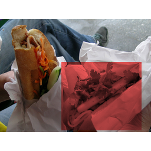
Target 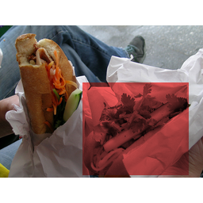
Prediction 模型实际执行的代码 import numpy as np
from PIL import Image
a = np.array(Image.open("input.png").convert("RGB"))
x1, y1, x2, y2 = (104, 104, 238, 221)
patch = np.array(Image.fromarray(a[y1:y2, x1:x2]).convert("HSV"))
patch[..., 0] = 0
patch[..., 1] = 160
a[y1:y2, x1:x2] = np.array(Image.fromarray(patch, mode="HSV").convert("RGB"))
Image.fromarray(a).save("output.png") PASS roi_refcoco_val_1709303_blue IoU 0.972 · edit L1 0.0068 · preserve L1 0.0001
EDIT: Tint the rectangular bounding-box region of the object described as "far left guy" blue. Preserve brightness and all pixels outside that region.
Input 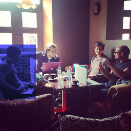
Target Prediction 模型实际执行的代码 import numpy as np
from PIL import Image
a = np.array(Image.open("input.png").convert("RGB"))
x1, y1, x2, y2 = (0, 89, 70, 195)
patch = np.array(Image.fromarray(a[y1:y2, x1:x2]).convert("HSV"))
patch[..., 0] = 170
patch[..., 1] = 160
a[y1:y2, x1:x2] = np.array(Image.fromarray(patch, mode="HSV").convert("RGB"))
Image.fromarray(a).save("output.png") PASS roi_refcoco_val_592560_blue IoU 0.954 · edit L1 0.0087 · preserve L1 0.0000
EDIT: Tint the rectangular bounding-box region of the object described as "zebra on left" blue. Preserve brightness and all pixels outside that region.
Input 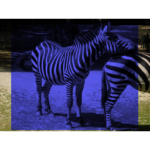
Target 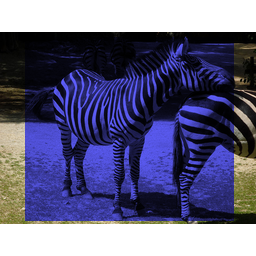
Prediction 模型实际执行的代码 import numpy as np
from PIL import Image
a = np.array(Image.open("input.png").convert("RGB"))
x1, y1, x2, y2 = (25, 37, 234, 221)
patch = np.array(Image.fromarray(a[y1:y2, x1:x2]).convert("HSV"))
patch[..., 0] = 170
patch[..., 1] = 160
a[y1:y2, x1:x2] = np.array(Image.fromarray(patch, mode="HSV").convert("RGB"))
Image.fromarray(a).save("output.png") FAIL roi_refcoco_val_2162742_red IoU 0.000 · edit L1 0.1825 · preserve L1 0.0137
EDIT: Tint the rectangular bounding-box region of the object described as "gurl" red. Preserve brightness and all pixels outside that region.
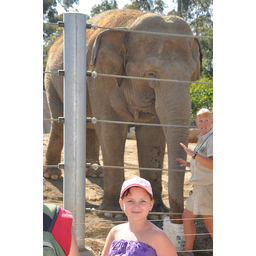
Input 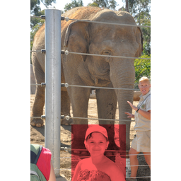
Target 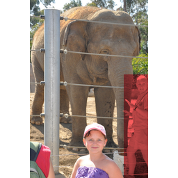
Prediction 模型实际执行的代码 import numpy as np
from PIL import Image
a = np.array(Image.open("input.png").convert("RGB"))
x1, y1, x2, y2 = (178, 107, 213, 256)
patch = np.array(Image.fromarray(a[y1:y2, x1:x2]).convert("HSV"))
patch[..., 0] = 0
patch[..., 1] = 160
a[y1:y2, x1:x2] = np.array(Image.fromarray(patch, mode="HSV").convert("RGB"))
Image.fromarray(a).save("output.png") FAIL roi_refcoco_val_2160383_green IoU 0.000 · edit L1 0.2544 · preserve L1 0.0170
EDIT: Tint the rectangular bounding-box region of the object described as "man in jersey" green. Preserve brightness and all pixels outside that region.
Input 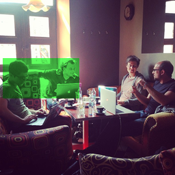
Target 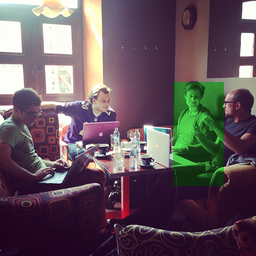
Prediction 模型实际执行的代码 import numpy as np
from PIL import Image
a = np.array(Image.open("input.png").convert("RGB"))
x1, y1, x2, y2 = (173, 82, 224, 186)
patch = np.array(Image.fromarray(a[y1:y2, x1:x2]).convert("HSV"))
patch[..., 0] = 85
patch[..., 1] = 160
a[y1:y2, x1:x2] = np.array(Image.fromarray(patch, mode="HSV").convert("RGB"))
Image.fromarray(a).save("output.png") FAIL roi_refcoco_val_1612703_red IoU 0.424 · edit L1 0.0000 · preserve L1 0.0083
EDIT: Tint the rectangular bounding-box region of the object described as "BOTTOM R." red. Preserve brightness and all pixels outside that region.
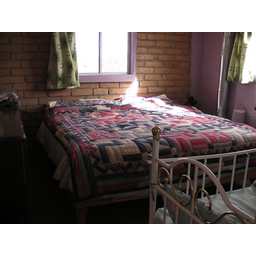
Input 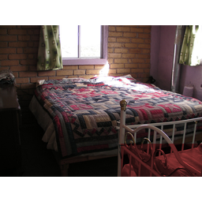
Target 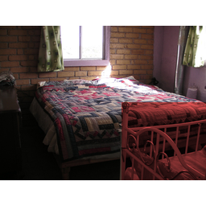
Prediction 模型实际执行的代码 import numpy as np
from PIL import Image
a = np.array(Image.open("input.png").convert("RGB"))
x1, y1, x2, y2 = (151, 127, 256, 224)
patch = np.array(Image.fromarray(a[y1:y2, x1:x2]).convert("HSV"))
patch[..., 0] = 0
patch[..., 1] = 160
a[y1:y2, x1:x2] = np.array(Image.fromarray(patch, mode="HSV").convert("RGB"))
Image.fromarray(a).save("output.png") 20 例抽样网格（input / target / prediction）
真实照片 · 指称定位 64 cases · 93.8%
模型只输出 JSON bbox。绿框是 RefCOCO 真值，红框是模型预测；IoU ≥ 0.5 记为成功。这里没有使用官方 RefCOCO 全量协议，只是把同一批照片转成统一的 256×256 像素任务做 smoke 对比。
全部 只看成功 只看失败
PASS refcoco_val_514243 IoU 0.978
GROUND: Locate the object described as: lady on right
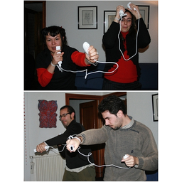
Input 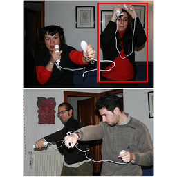
绿=GT · 红=预测 PASS refcoco_val_308201 IoU 0.977
GROUND: Locate the object described as: green vegetable with leaves
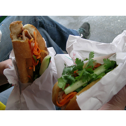
Input 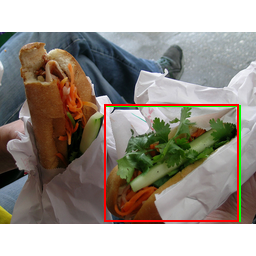
绿=GT · 红=预测 PASS refcoco_val_1709303 IoU 0.972
GROUND: Locate the object described as: far left guy
Input 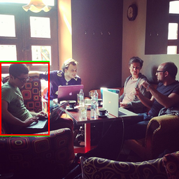
绿=GT · 红=预测 PASS refcoco_val_469475 IoU 0.951
GROUND: Locate the object described as: green woman
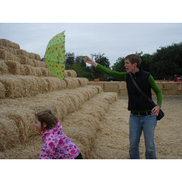
Input 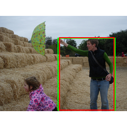
绿=GT · 红=预测 PASS refcoco_val_507574 IoU 0.949
GROUND: Locate the object described as: U2! Man on left
Input 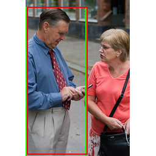
绿=GT · 红=预测 PASS refcoco_val_592560 IoU 0.948
GROUND: Locate the object described as: zebra on left
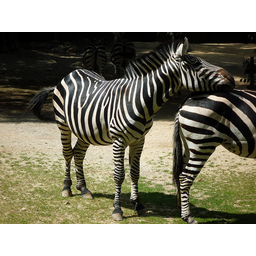
Input 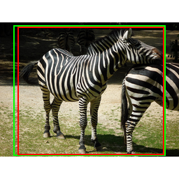
绿=GT · 红=预测 FAIL refcoco_val_2160383 IoU 0.000
GROUND: Locate the object described as: man in jersey
Input 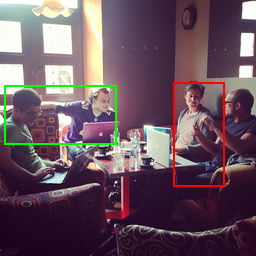
绿=GT · 红=预测 FAIL refcoco_val_99436 IoU 0.236
GROUND: Locate the object described as: chair left most
Input 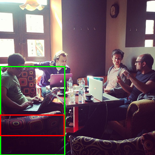
绿=GT · 红=预测 FAIL refcoco_val_1940800 IoU 0.404
GROUND: Locate the object described as: bottom left portion of couch on left
Input 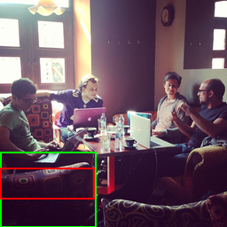
绿=GT · 红=预测 合成 held-out · edit / ground / QA 96 cases
合成 256×256 场景，训练时完全没见过。三类任务共 96 例：32 edit（100%）、32 ground（100%，mean IoU 0.990）、32 QA（96.9%）。edit 中有 24/32 与目标逐像素完全一致。
PASS tiny_smoke_v1_test_00000_qa answer 4 · task QA
QA: How many colored objects are in this image?
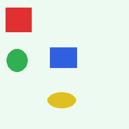
Input 期望输出 {"answer": 4}
PASS tiny_smoke_v1_test_00005_qa answer 'purple' · task QA
QA: What is the color of the leftmost object?
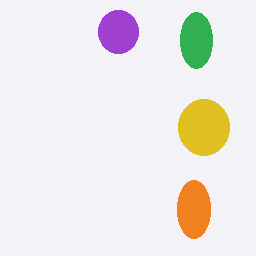
Input 期望输出 {"answer": "purple"}
PASS tiny_smoke_v1_test_00012_qa answer 2 · task QA
QA: How many colored objects are in this image?
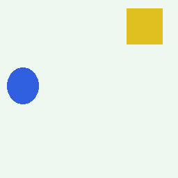
Input 期望输出 {"answer": 2}
20 例合成 edit 抽样网格
受控像素操作 · 320 cases 100% · 全部逐像素一致
这一组不是语义编辑，而是明确定义的确定性操作：整图翻转、亮度 ±20、画指定矩形、灰度等。它证明模型能稳定地把“指令 → 可执行程序 → 像素”这条链路跑通，但不能代表开放式语义编辑能力。
PASS magic_dev_140513_flip pixel exact
EDIT: Flip the entire image horizontally.
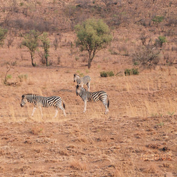
Input Target 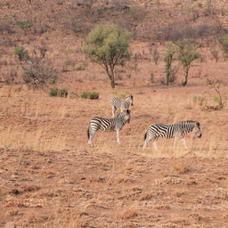
Prediction PASS magic_dev_140513_brighten pixel exact
EDIT: Add 20 to every RGB channel value, clipping to [0,255].
Input 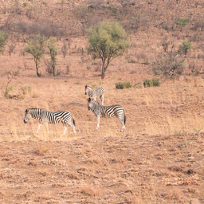
Target Prediction PASS magic_dev_140513_red_patch pixel exact
EDIT: Draw a solid red rectangle at x=32, y=40, width=40, height=32.
Input 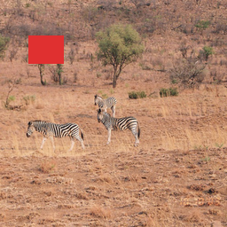
Target Prediction 20 例受控操作抽样网格
原始 MagicBrush 语义编辑 · 0 / 64
这是最重要的负结果。输入照片和原始 MagicBrush 指令，模型被要求做“把墙上的纸变成镜子”“把棒球棒换成光剑”这类开放式语义编辑。结果：0/64 成功 ，只有 36/64 产出了可执行代码，平均区域 IoU 0.1395，edit L1 0.2232。失败样例和实际代码全部保留在这里。
图像对本身不是程序监督。没有把 target 图像喂给模型，也没有训练一个图像生成头；这组结果说明“会写像素程序”还不等于“会做开放式语义编辑”。
FAIL magic_dev_319096 IoU 0.000 · L1 0.212
EDIT: Make the piece of paper hanging on the wall a mirror
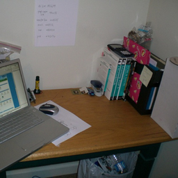
Input 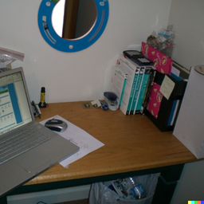
MagicBrush target Prediction 模型实际执行的代码 import numpy as np
from PIL import Image
a = np.array(Image.open("input.png").convert("RGB"))
x1, y1, x2, y2 = (49, 0, 109, 66)
patch = np.array(Image.fromarray(a[y1:y2, x1:x2]).convert("RGB"))
patch = np.array(Image.fromarray(patch).convert("RGB"))
patch = np.array(Image.fromarray(patch).convert("RGB"))
a[y1:y2, x1:x2] = np.array(Image.fromarray(patch).convert("RGB"))
Image.fromarray(a).save("output.png") FAIL magic_dev_415314 IoU 0.000 · L1 0.177
EDIT: replace the baseball bat for a laser sword
Input 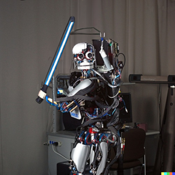
MagicBrush target 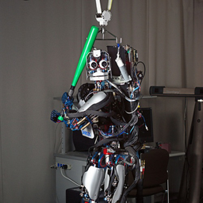
Prediction 模型实际执行的代码 import numpy as np
from PIL import Image
a = np.array(Image.open("input.png").convert("RGB"))
mask = np.all(a == [160, 64, 32], axis=-1)
a[mask] = [0, 224, 208]
Image.fromarray(a.astype(np.uint8)).save("output.png") FAIL magic_dev_75065 IoU 0.063 · L1 0.144
EDIT: make the cow smile
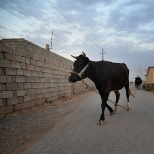
Input 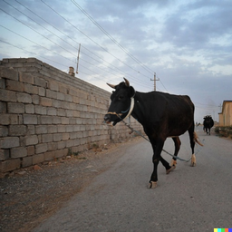
MagicBrush target 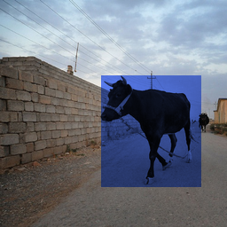
Prediction 模型实际执行的代码 import numpy as np
from PIL import Image
a = np.array(Image.open("input.png").convert("RGB"))
x1, y1, x2, y2 = (114, 85, 227, 211)
patch = np.array(Image.fromarray(a[y1:y2, x1:x2]).convert("HSV"))
patch[..., 0] = 160
patch[..., 1] = 160
a[y1:y2, x1:x2] = np.array(Image.fromarray(patch, mode="HSV").convert("RGB"))
Image.fromarray(a).save("output.png") FAIL magic_dev_483587 IoU 0.828 · L1 0.257
EDIT: change the dog for a cat
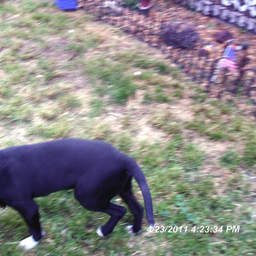
Input 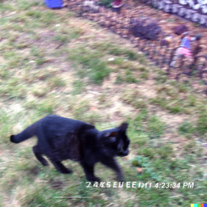
MagicBrush target 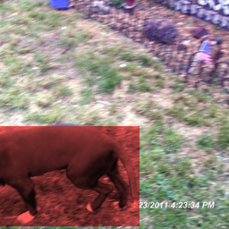
Prediction 模型实际执行的代码 import numpy as np
from PIL import Image
a = np.array(Image.open("input.png").convert("RGB"))
x1, y1, x2, y2 = (0, 141, 156, 253)
patch = np.array(Image.fromarray(a[y1:y2, x1:x2]).convert("HSV"))
patch[..., 0] = 0
patch[..., 1] = 160
a[y1:y2, x1:x2] = np.array(Image.fromarray(patch, mode="HSV").convert("RGB"))
Image.fromarray(a).save("output.png") FAIL magic_dev_140513 无有效输出 · ValueError: shape mismatch: value array of shape (0,3,3) could not be broadcast
EDIT: edit some mountains in the background
Input 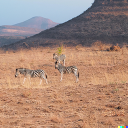
MagicBrush target 没有产出有效图片
Prediction FAIL magic_dev_393224 无有效输出 · ValueError: shape mismatch: value array of shape (162,3,3) could not be broadcas
EDIT: What if the man was bald
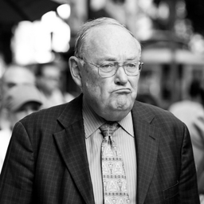
Input 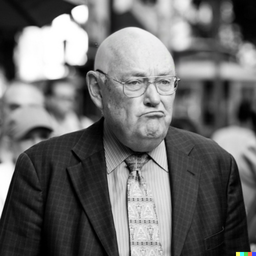
MagicBrush target 没有产出有效图片
Prediction 训练数据与曲线
最终阶段：19,776 条混合记录，5,000 次 optimizer update，batch size 1 × 梯度累积 4，rank-8 语言 LoRA，只对 assistant token 计算交叉熵。单卡 H20，实际训练约 97 分钟，峰值显存 22.92 GiB。每个阶段都从上一阶段权重 warm start，但使用新的 optimizer。
模型输入永远不包含 target bbox、mask 或目标图。图像以 PNG 保存，像素另有可逆的 uint32 0xRRGGBB NPZ 校验；稠密像素值不会序列化进语言 token。
各阶段数据混合不同，因此曲线只用于确认训练稳定，不能当作同分布对比。
27B 对照：Qwen/Qwen3.8-27B @ 37561816e66b5b9153b1b64c10968c18c1e6f4a0 用同一 1,600 条混合数据跑了 250-step smoke。它的起点是 post-trained checkpoint，而 9B 主模型从 Base 开始，所以这不是纯参数规模消融。
完整性审计与已修正的错误
✓ 所有 cohort 的 case ID 完整✓ 最终 adapter 权重真实加载✓ loss / gradient 全部有限✓ 每次评测都重新加载 adapter✓ 预测 PNG 与 packed pixels 一致✓ 保存了模型实际执行的代码✓ 请求颜色语义正确（v1 bug 修复后）✓ 质量门通过452 验证过的 prediction PNG / NPZ 对
8 / 8 审计布尔项全部为 true
5,000 最终阶段 optimizer steps
V1 HSV 错误已作废： 早期局部着色数据把 HSV 数组直接传给 Image.fromarray，没有指定 mode="HSV"，导致颜色语义错误。所有 v1 tint 分数已标记为 invalid 并归档；最终结果全部来自显式 HSV mode 的 v2 数据，并通过独立已知 RGB 检查。另有一例普通 HSV 程序首次超过 12 秒执行启动超时，冻结输出在 45 秒限制下复核，原始超时记录与预测哈希均保留。
复现与产物
模型与训练
Base：Qwen/Qwen3.5-9B-Base @ 68c46c4b3498877f3ef123c856ecfde50c39f404
LoRA：rank 8，仅语言侧，assistant-token CE
最终阶段：19,776 records · 5,000 steps · 1×H20 · 97 min · 22.92 GiB
Adapter SHA256：a2c1358383fdc8233f09020b9dfa1cd172e8b809d75695672b671f5d362be669
单图推理
cd qwen_image_edit_smoke
CUDA_VISIBLE_DEVICES=0 python infer.py \
--image /path/to/photo.png \
--instruction 'Tint the rectangular bounding-box region of the white pot in the upper right blue. Preserve brightness.' \
--adapter outputs/final/adapter \
--output outputs/my_demo
推理 CLI 不接收 target、bbox 或 mask；它保存模型原始回答、实际执行代码、编辑后的 PNG、packed pixels 和对比图。完整方法见实验目录的 EXPERIMENT.md，逐案例证据见本地 outputs/report.html。公开页面只放精选案例，完整 3,488 张图与失败记录保留在工作区。
边界： 所有任务都是 256×256 单轮输入；LoRA 只挂在语言侧；指称着色和受控操作是明确定义的转换任务，不是官方 benchmark；开放式语义编辑仍是未解决项（MagicBrush 0/64）。这个实验证明的是“能训通、能执行、能定位、能按指令改像素”，不是“已经学会通用图像编辑”。